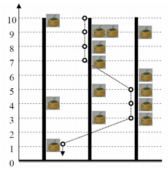

雷涛的小猫雷涛同学非常的有爱心，在他的宿舍里，养着一只因为受伤被救助的小猫（当然，这样的行为是违反学
生宿舍管理条例的）。 在他的照顾下，小猫很快恢复了健康，并且愈发的活泼可爱了。可是有一天，雷涛下课回
到寝室，却发现小猫不见了！经过一番寻找，才发现她正趴在阳台上对窗外的柿子树发呆…在北京大学的校园里，
有许多柿子树，在雷涛所在的宿舍楼前，就有N棵。并且这N棵柿子树每棵的高度都是H。冬天的寒冷渐渐笼罩了大
地，树上的叶子渐渐掉光了，只剩下一个个黄澄澄的柿子，看着非常喜人。而雷涛的小猫恰好非常的爱吃柿子，看
着窗外树上的柿子，她十分眼馋，于是决定利用自己敏捷的跳跃能力跳到树上去吃柿子。小猫可以从宿舍的阳台上
跳到窗外任意一棵柿子树的树顶。之后，她每次都可以在当前位置沿着当前所在的柿子树向下跳1单位距离。当然
，小猫的能力远不止如此，她还可以在树之间跳跃。每次她都可以从当前这棵树跳到另外的任意一棵，在这个过程
中，她的高度会下降Delta单位距离。每个时刻，只要她所在的位置有柿子，她就可以吃掉。整个“吃柿子行动”
一直到小猫落到地面上为止。雷涛调查了所有柿子树上柿子的生长情况。饱很想知道，小猫从阳台出发，最多能吃
到多少柿子？他知道写一个程序可以很容易的解决这个问题，但是他现在懒于写任何代码。于是，现在你的任务就
是帮助雷涛写一个这样的程序。左图是N=3，H=10，Delta=2的一个例子。小猫按照图示路线进行跳跃，可以吃到最
多的8个柿子
